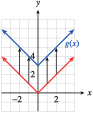
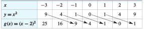

In this section, we explore how certain changes in the formula for a function affect its graph. In particular, we will compare the graph of \(y = f (x)\) with the graphs of
\begin{equation*}
y = f (x) + k,~~~ \text{ and }~~~ y =f (x + h)
\end{equation*}
for different values of the constants \(k\) and \(h\text{.}\) Such variations are called transformations of the graph.
SubsectionVertical Shifts
Figure 229 shows the graphs of \(f (x) = x^2 + 4\text{,}\) \(g(x) = x^2 - 4\text{,}\) and the basic parabola, \(y = x^2\text{.}\) By comparing tables of values, we can see exactly how the graphs of \(f\) and \(g\) are related to the basic parabola.
Vertical Shift
\(x\)
\(-2\)
\(-1\)
\(~0~\)
\(~~1~~\)
\(~2~\)
\(y=x^2\)
\(4\)
\(1\)
\(0\)
\(1\)
\(4\)
\(f(x)=x^2+4\)
\(8\)
\(5\)
\(4\)
\(5\)
\(8\)
\(x\)
\(-2\)
\(-1\)
\(0\)
\(1\)
\(2\)
\(y=x^2\)
\(4\)
\(1\)
\(0\)
\(1\)
\(4\)
\(g(x)=x^2-4\)
\(0\)
\(-3\)
\(-4\)
\(-3\)
\(0\)
Figure229
Each \(y\)-value in the table for \(f (x)\) is four units greater than the corresponding \(y\)-value for the basic parabola \(y=x^2 \text{.}\) Consequently, each point on the graph of \(f (x)\) is four units higher than the corresponding point on the basic parabola, as shown by the arrows. Similarly, each point on the graph of \(g(x)\) is four units lower than the corresponding point on the basic parabola.
The graphs of \(y = f (x)\) and \(y = g(x)\) are said to be translations (or shifts) of the graph of \(y = x^2\text{.}\) They are shifted to a different location in the plane but retain the same size and shape as the original graph. In general, we have the following principles.
Vertical Shifts
Let \(k\gt 0\text{.}\) Compared with the graph of \(y = f (x)\text{,}\)
the graph of \(y=f(x)+k\) is shifted upward \(k\) units, and
the graph of \(y=f(x)-k\) is shifted downward \(k\) units.
Example230
Graph the following functions.
\(g(x) = \abs{x} + 3\) and \(y=\abs{x}\) and discuss how they are related.
\(h(x) = \dfrac{1}{x}- 2\) and \(y=\frac{1}{x}\) and discuss how they are related.
The table shows that the \(y\)-values for \(g(x)\) are each three units greater than the corresponding \(y\)-values for the absolute value function. The graph of \(g(x) = \abs{x} + 3\) is a translation of the basic graph of \(y = \abs{x}\text{,}\) shifted upward three units, as shown in Figure 231.

\(x\)
\(-2\)
\(-1\)
\(0\)
\(1\)
\(2\)
\(y=\abs{x}\)
\(2\)
\(1\)
\(0\)
\(1\)
\(2\)
\(g(x)=\abs{x}+3\)
\(5\)
\(4\)
\(3\)
\(4\)
\(5\)
Figure231
The table shows that the \(y\)-values for \(h(x)\) are each two units smaller than the corresponding \(y\)-values for \(y = \dfrac{1}{x}\text{.}\) The graph of \(h(x) = \dfrac{1}{x} - 2\) is a translation of the basic graph of \(y = \dfrac{1}{x}\text{,}\) shifted downward two units, as shown in Figure 232.
\(x\)
\(-2\)
\(-1\)
\(\dfrac{1}{2}\)
\(1\)
\(2\)
\(y=\dfrac{1}{x}\)
\(\dfrac{-1}{2}\)
\(-1\)
\(2\)
\(1\)
\(\dfrac{1}{2}\)
\(h(x)=\dfrac{1}{x}-2\)
\(\dfrac{-5}{2}\)
\(-3\)
\(0\)
\(-1\)
\(\dfrac{-3}{2}\)
Figure232
Example233
The function \(E = f (h)\) graphed in Figure 234 gives the amount of electrical power, in megawatts, drawn by a community from its local power plant as a function of time during a 24-hour period in 2002. Sketch a graph of \(y = f (h) + 300\) and interpret its meaning.
The graph of \(y = f (h) + 300\) is a vertical translation of the graph of \(f\text{,}\)
as shown in Figure 235. At each hour of the day, or for each value of \(h\text{,}\) the \(y\)-coordinate is 300 greater than on the graph of \(f\text{.}\) So at each hour, the community is drawing 300 megawatts more power than in 2002.
An evaporative cooler, or swamp cooler, is an energy-efficient type of air conditioner used in dry climates. A typical swamp cooler can reduce the temperature inside a house by 15 degrees. Figure 237a shows the graph of \(T = f (t)\text{,}\) the temperature inside Kate’s house \(t\) hours after she turns on the swamp cooler. Write a formula in terms of \(f\) for the function \(g\) shown in Figure 237b and, give a possible explanation of its meaning.
Figure237
SubsectionHorizontal Shift
Now consider the graphs of \(f (x) = (x + 2)^2\) and \(g(x) = (x - 2)^2\) shown in Figure 238. Compared with the graph of the basic function \(y = x^2\text{,}\) the graph of \(f (x) = (x + 2)^2\) is shifted two units to the left, as shown by the arrows. You can see why this happens by studying the function values in the table.
Figure238
Locate a particular \(y\)-value for \(y = x^2\text{,}\) say, \(y = 4\text{.}\) You must move two units to the left in the table to find the same \(y\)-value for \(f (x)\text{,}\) as shown by the arrow. In fact, each \(y\)-value for \(f (x)\) occurs two units to the left when compared to the same \(y\)-value for \(y = x^2\text{.}\)
Figure239Figure240
Similarly, the graph of \(g(x) = (x - 2)^2\) is shifted two units to the right compared to the graph of \(y = x^2\text{.}\) In the table for \(g\text{,}\) each \(y\)-value for \(g(x)\) occurs two units to the right of the same \(y\)-value for \(y = x^2\text{.}\) In general, we have the following principle.
Horizontal Shifts
Let \(h\gt 0\text{.}\) Compared with the graph of \(y = f (x)\text{,}\)
the graph of \(y = f (x + h)~ ~\) is shifted \(h\) units to the left, and
the graph of \(y = f (x - h)~ ~\) is shifted \(h\) units to the right.
Note241
At first, the direction of a horizontal translation may seem counterintuitive. Look again at the tables above to help you see how the shift occurs.
Example242
Graph the following functions.
\(g(x) =\sqrt{x + 1}\) and \(y=\sqrt{x}\) and discuss how they are related.
\(h(x) = \dfrac{1}{(x - 3)^2}\) and \(y=\dfrac{1}{x^2}\) and discuss how they are related.
The table shows that each \(y\)-value for \(g(x)\) occurs one unit to the left of the same \(y\)-value for the graph of \(y=\sqrt{x}\text{.}\) Consequently, each point on the graph of \(y = g(x)\) is shifted one unit to the left of \(y =\sqrt{x}\text{,}\) as shown in Figure 243.
Figure243
Consider the table of values for the function.
\(x\)
\(-1\)
\(0\)
\(1\)
\(2\)
\(3\)
\(4\)
\(y=\dfrac{1}{x}\)
\(1\)
undefined
\(1\)
\(\dfrac{1}{4}\)
\(\dfrac{1}{9}\)
\(\dfrac{1}{16}\)
\(y=\dfrac{1}{(x-3)^2}\)
\(\dfrac{1}{16}\)
\(\dfrac{1}{9}\)
\(\dfrac{1}{4}\)
\(1\)
undefined
\(1\)
The table shows that each \(y\)-value for \(h(x)\) occurs three units to the right of the same \(y\)-value for the graph of \(y =\dfrac{1}{x^2}\text{.}\) Consequently, each point on the graph of \(y = h(x)\) is shifted three units to the right of \(y =\dfrac{1}{x^2}\text{,}\) as shown in Figure 244.
Figure244
Example245
The function \(N = f (p)\) graphed in Figure 246 gives the number of people who have a given eye pressure level \(p\) measured in millimeters of mercury (mm Hg) from a sample of 100 people with healthy eyes, and the function \(g\) gives the number of people with pressure level \(p\) in a sample of 100 glaucoma patients.
Figure246
Write a formula for \(g\) as a transformation of \(f\text{.}\)
For what pressure readings could a doctor be fairly certain that a patient has glaucoma?
The graph of \(g\) is translated \(10\) units to the right of \(f\text{,}\) so \(g(p) = f (p - 10)\text{.}\)
Pressure readings above \(40\)mm Hg are a strong indication of glaucoma. Readings between \(10\) and \(40\)mm Hg cannot conclusively distinguish healthy eyes from those with glaucoma.
The function \(C = f (t)\) in Figure 248 gives the caffeine level in Delbert's bloodstream at time \(t\) hours after he drinks a cup of coffee, and \(g(t)\) gives the caffeine level in Francine's bloodstream. Write a formula for \(g\) in terms of \(f\text{,}\) and explain what it tells you about Delbert and Francine.
We identify the basic graph from the structure of the formula for \(f (x)\text{.}\) In this case, the basic graph is \(y = x^3\text{,}\) so we begin by locating a few points on that graph, as shown in Figure 250.
We will perform the translations separately, following the order of operations. First, we sketch a graph of \(y = (x + 4)^3\) by shifting each point on the basic graph four units to the left. We then move each point up two units to obtain the graph of \(f (x) = (x + 4)^3 + 2\text{.}\) All three graphs are shown in Figure 250.